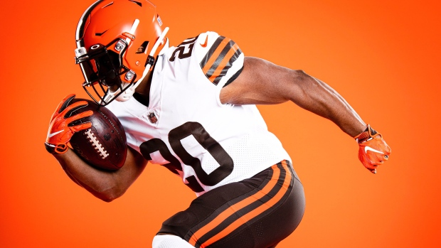

Cleveland Browns Win!! |
 |
CLEVELAND — The Cleveland Browns demolished their rival, the Pittsburgh Steelers, to win the franchise's first playoff game in nearly 30 years. The Browns scored a touchdown on the first play of the game, when a bad snap by Pittsburgh led to a fumble recovered in the end zone. Things only got better for Cleveland from there. Steelers quarterback Ben Roethlisberger threw three interceptions in the first two quarters, leading to three more touchdowns for Cleveland. The score was 28-0 after the first quarter. The Steelers rallied to score a touchdown before the end of the second quarter, making the score 28-7. But the Browns responded by a scoring a touchdown before half, making the score 35-7 at halftime. Pittsburgh found a second wind in the second half and rallied to score two touchdowns in the third quarter, narrowing the lead to 35-23. The two teams traded touchdowns, but Cleveland notched another field goal to make the score 42-29. |